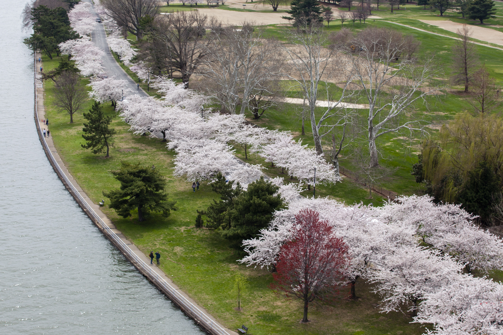

Photo: NPS / NCR Photo Library (public domain)
Automatically updated daily. Last updated: October 24, 2026 at 15:16 UTC
Plain-English judicial update
The court has temporarily stopped further tree cutting at East Potomac Golf Course through October 26 and requires advance notice before the government makes other irreversible changes. The court has not yet decided whether longer-term relief should be granted. An evidentiary hearing on the preliminary-injunction request is scheduled for October 19.
The federal defendants may not fell additional trees at East Potomac Golf Course through October 26, 2026, unless the court enters a further order.
2026-10-13 · October 13 minute order; Docket entry 79 memorandum opinionThrough October 26, the government must give the court and the plaintiffs three business days' written notice before making an irreversible modification to a permanent form or feature of the golf course.
2026-10-13 · October 13 minute orderOn the limited record then before it, the court found that the plaintiffs had shown likely success on jurisdiction and their NEPA claim, likely irreparable harm, and equities favoring temporary relief. This was a preliminary ruling, not a final decision on the lawsuit's merits.
2026-10-13 · October 13 minute order and Docket entry 79The court allowed the plaintiffs to update their complaint because the facts surrounding the project were changing quickly. This ruling allowed the new allegations to be filed; it did not decide whether those allegations are ultimately correct.
2026-10-15 · October 15 minute order; motion 72The plaintiffs' motion for a preliminary injunction and stay remains before the court. The temporary October 13 restrictions do not themselves resolve whether protections will continue for the remainder of the litigation.
2026-10-14 · Docket entry 80The parties continue to dispute whether the court has jurisdiction, whether there is reviewable final agency action, and whether the government complied with NEPA. The temporary restraining-order findings are preliminary and do not finally decide these questions.
2026-10-16 · Docket entries 80 and 84; October 18 minute orderThe government filed a motion asking that the judge be disqualified and that audio be released. The docket supplied to the tracker does not show that this motion has been decided.
2026-10-16 · Docket entry 86The court initially stopped all tree removal until 7:00 a.m. on October 13 or further order. That short order was superseded by the October 13 temporary restraining order extending protection through October 26.
2026-10-12 · October 12 and October 13 minute ordersIn May, the court deferred ruling on the earlier request for a stay or preliminary injunction while the parties completed additional briefing. Later factual developments produced the October emergency proceedings.
2026-05-05 · May 5 minute orderAI-assisted summary generated only from the court docket. Verify the linked docket before relying on it. Last summary update: 2026-10-18T20:19:00Z. Not legal advice.
135 ranked articles
Articles published from January 1, 2025 through the present are retained. The top three are ranked by a public-interest priority score: 35% direct relevance, 30% recency, 20% text novelty, 10% coverage momentum, and 5% source quality. The score is automated and is not a fact-check.
| Date Filed | Entry # | Description |
|---|---|---|
| 2026-10-18 | 90.0 | RESPONSE re 86 MOTION to Disqualify Judge and Release Audio filed by DC PRESERVATION LEAGUE, ALEX DICKSON, DAVE ROBERTS. (Eisen, Norman) (Entered: 10/18/2026) |
| 2026-10-18 | 91.0 | NOTICE of Factual Development Regarding Release of Golf Course Design by DC PRESERVATION LEAGUE, ALEX DICKSON, DAVE ROBERTS (Attachments: # 1 Exhibit A (First Truth Social post), # 2 Exhibit B (Second Truth Social post))(Bardwell, Will) (Entered: 10/18/2026) |
| 2026-10-18 | nan | nan |
| 2026-10-18 | 92.0 | NOTICE of Appearance by Benjamin Hayes on behalf of All Defendants (Hayes, Benjamin) (Entered: 10/18/2026) |
| 2026-10-18 | nan | nan |
| 2026-10-18 | 89.0 | NOTICE of Appearance by Robert N. Stander on behalf of All Defendants (Stander, Robert) (Entered: 10/18/2026) |
| 2026-10-18 | nan | MINUTE ORDER. The Court takes judicial notice of President Donald J. Trump's 10:09 a.m. Truth Social post on October 18, 2026, which states:"I am pleased to announce that the Department of the Interior, under the auspices of Secretary Doug Burgum, and in conjunction with famed Golf Course Architect, Tom Fazio, has developed a plan to build a World Class Championship Golf Course on the site of the current East Potomac Golf Links, located in Washington, D.C. When completed, it will be open to the Public while, at the same time, designed to the Highest Level of Golf and able to hold World Class Tournaments such as the U.S. Open, the PGA Championship, the Ryder Cup, and the Presidents Cup. This Course will create many Jobs, and have a tremendously positive Economic Development impact on Washington, D.C., and the surrounding area. Millions of Dollars will inure to the Capital area. The current Course is old, broken, dilapidated, and of no further use or effect. It is in very poor condition, with falling, dangerous, and disease infested trees and, importantly, a collapsing and hazardous seawall. When the East Potomac Course was originally built, it was famous for no trees, with views of Washington, D.C., for all to see, but now, it is completely overgrown, dysfunctional, and unsafe. Restoration work will begin on the Fazio Design on November 15th, when the old Course will be closed to play. The new Course will be opened in approximately 15 months. The United States Golf Association, PGA of America, and the PGA Tour have already been notified that they will soon have one of the Best and Most Spectacular Golf Courses anywhere in the World to put on their list of great places to play, and hold Major Events. Thank you for your attention to this matter! President DONALD J. TRUMP"The Court ORDERS that the Government notify it, by 8:00 p.m. today, whether it continues to take the position that it took in its October 16, 2026, filing, that, "there is no final agency action" and that "at most [] the President has given preliminary thought to" the plan to rebuild East Potomac Golf Course. Dkt. 84 at 33-34.The Court further ORDERS Government counsel Stanley Woodward, Jr. and Robert Stander, who have filed appearances in this case, to attend in-person Monday's hearing.Signed by Judge Ana C. Reyes on 10/18/2026. (lcacr3) |
| 2026-10-17 | 88.0 | REPLY re 80 MOTION for Preliminary Injunction MOTION to Stay filed by DC PRESERVATION LEAGUE, ALEX DICKSON, DAVE ROBERTS. (Bardwell, Will) (Entered: 10/17/2026) |
| 2026-10-16 | nan | nan |
| 2026-10-16 | nan | MINUTE ORDER. The Court ORDERS Plaintiffs to file a response to Defendants' 86 Motion by October 18, 2026, at 2:00 p.m. Signed by Judge Ana C. Reyes on 10/16/2026. (lcacr2) |
| 2026-10-16 | nan | MINUTE ORDER. The Court encourages the parties to find opportunities for young lawyers to present oral argument. If a young lawyer argues, amicus curiae Hains Point Runners will be given 15 minutes of argument time at the Evidentiary Hearing on Monday, October 19.If the Government wishes to cross-examine the individual Plaintiffs or any representative of the organizational Plaintiff, the Government must inform Plaintiffs of its position by noon on October 17, 2026. Any Plaintiff the Government identifies is ORDERED to appear at the Hearing in person. Given his recently filed declaration, Dr. Griess is now ORDERED to appear at the Hearing in person. If called to testify, Mr. Lands may still do so in person or remotely. Signed by Judge Ana C. Reyes on 10/16/2026. (lcacr3) |
| 2026-10-16 | 86.0 | MOTION to Disqualify Judge and Release Audio by JESSICA BOWRON, DOUG BURGUM, DEPARTMENT OF INTERIOR, NATIONAL PARK SERVICE. (Attachments: # 1 Text of Proposed Order)(Woodward, Stanley) (Entered: 10/16/2026) |
| 2026-10-16 | nan | nan |
| 2026-10-16 | 87.0 | NOTICE of Corrections Regarding Plaintiffs' Positions on Defendants' Motion by DC PRESERVATION LEAGUE, ALEX DICKSON, DAVE ROBERTS re 86 Motion to Disqualify Judge (Samburg, Mark) (Entered: 10/16/2026) |
| 2026-10-16 | 85.0 | NOTICE of Appearance by Stanley Edmund Woodward, Jr on behalf of All Defendants (Woodward, Stanley) (Entered: 10/16/2026) |
| 2026-10-16 | nan | MINUTE ORDER. The Court ORDERS Defendants to file a response to Plaintiff's opposition by October 18, 2026, at 8:00 p.m. Signed by Judge Ana C. Reyes on 10/16/2026. (lcacr2) |
| 2026-10-16 | 84.0 | Memorandum in opposition to re 80 MOTION for Preliminary Injunction MOTION to Stay filed by JESSICA BOWRON, DOUG BURGUM, DEPARTMENT OF INTERIOR, NATIONAL PARK SERVICE. (Attachments: # 1 Affidavit DR. KEVIN GRIESS, # 2 Text of Proposed Order)(Piropato, Marissa) (Entered: 10/16/2026) |
| 2026-10-15 | nan | MINUTE ORDER. The preliminary injunction evidentiary hearing set for 10:00 a.m. on Monday, October 19, 2026, will be held in-person in Courtroom 12. Consistent with the Court's prior Minute Order on October 12, 2026, the Court ORDERS that Gregory Wischer and Jessica Bowron appear in-person at the hearing. The Court further ORDERS that Frank Lands and Kevin Griess be available for sworn testimony as needed, in-person or virtually.The hearing will be accessible to the public via the Court's public access dial-in line, except for when sworn testimony is taken. The Court will begin the evidentiary hearing by taking sworn testimony. The public access telephone number is 833-990-9400, and the access code is 787605272. It is ORDERED that the attendees using the public access telephone line shall adhere to the following: Persons remotely accessing court proceedings are reminded of the general prohibition against photographing, recording, and rebroadcasting any court proceedings (including those held by telephone or videoconference). Violation of these prohibitions may result in sanctions, including removal of court-issued media credentials, restricted entry to future hearings, denial of entry to future hearings, or any other sanctions deemed necessary by the presiding Judge. Signed by Judge Ana C. Reyes on 10/15/2026. (lcacr3) |
| 2026-10-15 | nan | nan |
| 2026-10-15 | nan | nan |
| 2026-10-15 | nan | MINUTE ORDER granting Plaintiffs' 72 Motion for Leave to file Amended and Supplemental Complaint. Federal Rule of Civil Procedure 15(a)(2) instructs the Court to "freely give leave when justice so requires." Defendants argue only that amendment would be futile. Dkt. 75 at 2. The Court disagrees. Regardless, the Court "may permit supplementation even though the original pleading is defective in stating a claim or defense." Fed. R. Civ. P. 15(d). Because of the fast-moving factual developments in this case, the Court finds that it is in the interest of justice for Plaintiffs to file their Amended and Supplemental Complaint. Signed by Judge Ana C. Reyes on 10/15/2026. (lcacr3) |
| 2026-10-15 | nan | nan |
| 2026-10-15 | nan | MINUTE ORDER granting 83 Motion for Leave to File Amicus Brief. Signed by Judge Ana C. Reyes on 10/15/2026. (lcacr3) |
| 2026-10-15 | nan | nan |
| 2026-10-15 | nan | nan |
| 2026-10-14 | 81.0 | REPLY to opposition to motion re 72 Motion to Amend/Correct,, Reply in Support of Rule 15 Motion filed by DC PRESERVATION LEAGUE, ALEX DICKSON, DAVE ROBERTS. (Samburg, Mark) (Entered: 10/14/2026) |
| 2026-10-14 | nan | MINUTE ORDER. In line with Section 5(a)(ii) of the Court's 10 Standing Order, the Court ORDERS that Plaintiffs must submit jointly prepared Key Cases binders related to the preliminary injunction briefing. The binders should arrive in chambers no later than 12:00 p.m. on Friday, October 16. Due to the nature of the case, the parties should prepare four Key Cases binders, each of which must be indexed and tabbed: (1) Cases related to Article III Standing; (2) Cases related to Final Agency Action; (3) Cases related to NEPA; (4) Cases related to any remaining issues the parties would like to discuss. Signed by Judge Ana C. Reyes on 10/14/2026. (lcacr3) |
| 2026-10-14 | 80.0 | MOTION for Preliminary Injunction by DC PRESERVATION LEAGUE, ALEX DICKSON, DAVE ROBERTS. (Attachments: # 1 Memorandum in Support, # 2 Declaration Will Bardwell, # 3 Exhibit Ex. A, # 4 Text of Proposed Order)(Bardwell, Will). Added MOTION to Stay on 10/14/2026 (znmw). (Entered: 10/14/2026) |
| 2026-10-14 | nan | nan |
| 2026-10-14 | 82.0 | NOTICE OF ACTIVITY by JESSICA BOWRON, DOUG BURGUM, DEPARTMENT OF INTERIOR, NATIONAL PARK SERVICE (Piropato, Marissa) (Entered: 10/14/2026) |
“East Potomac Park” · United States · Past 3 months · Google Trends
Relative search interest, scaled from 0 to 100: 100 marks peak interest in this period and region. These are not search counts. Low search volume can appear as zero or insufficient data. Search activity measures attention, not support for a particular outcome.
Data source: Google Trends — open the interactive chart .
Only sent when there's genuinely new hearing or notice activity — not a daily digest.
This website is dedicated to those who cherish nature and social justice. <3
“I do not know if the people of the United States would vote for superior men if they ran for office, but there can be no doubt that such men do not run.” — Alexis de Tocqueville, Democracy in America
Honorary mention: Dr. Steven Scalet, longtime Director of Philosophy and Ethics at UBalt and my favorite professor. He is one of the gentlest people I have ever met and has spent years teaching students to think seriously about ethics, justice, and the world they wish to build—a quiet leader among the movers and shakers of social upheaval.
Explore additional tools for Maryland civic engagement and tax-policy analysis.